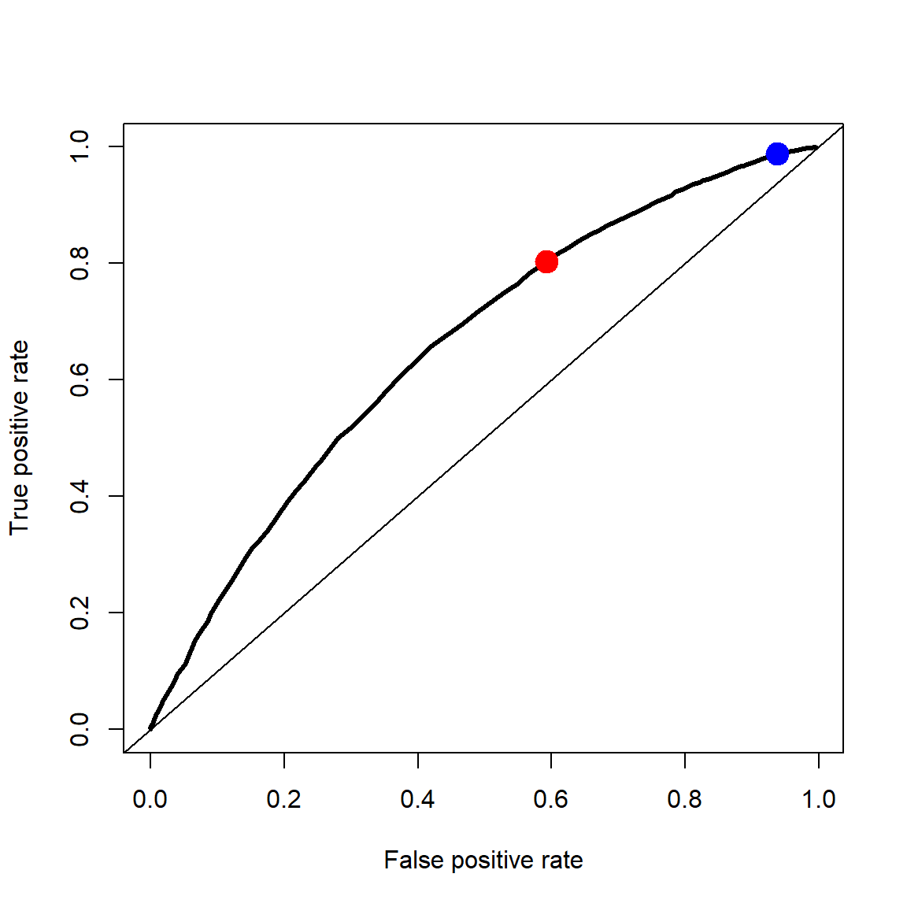
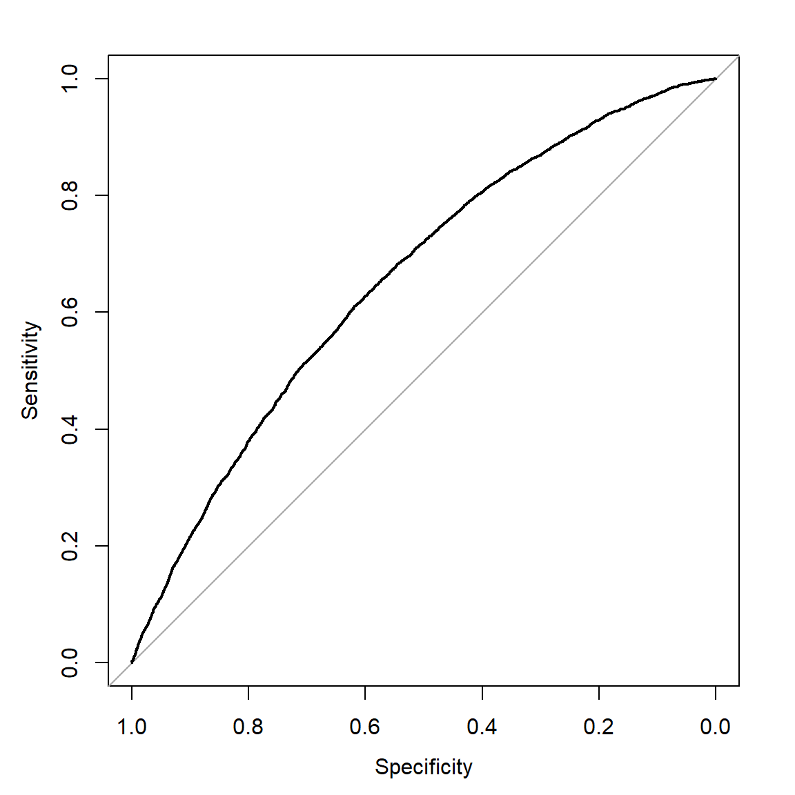
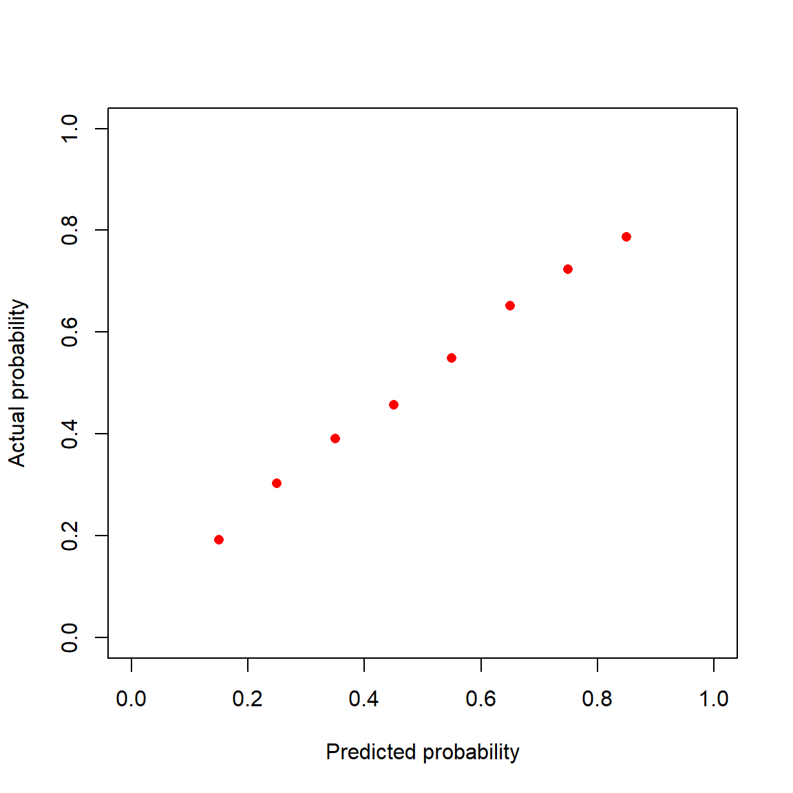
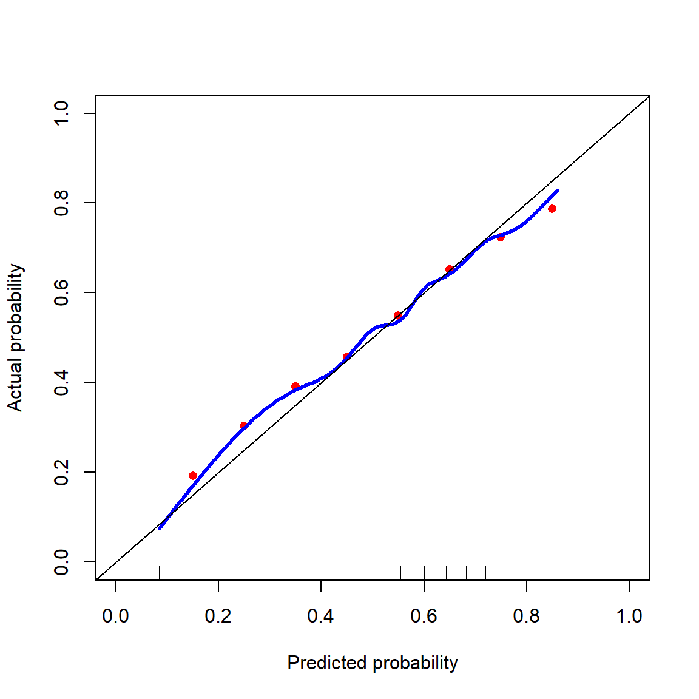
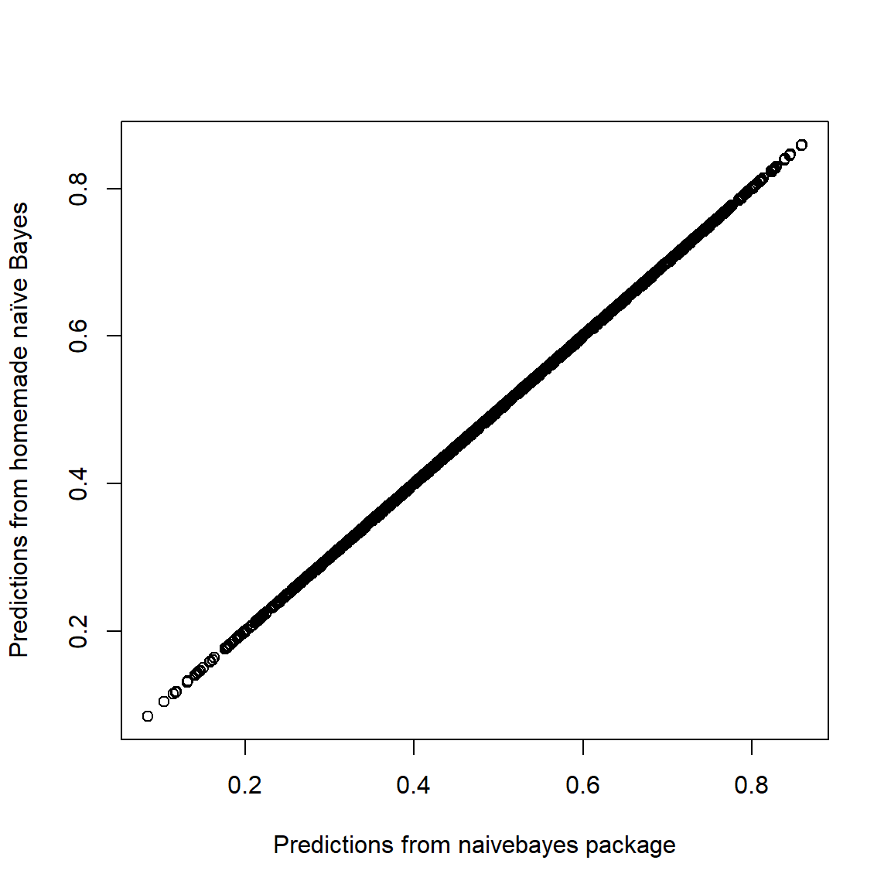

library(dplyr)
library(tidyr)
library(kableExtra)
datRecid <- read.csv("data/NIJ_s_Recidivism_Challenge_Full_Dataset.csv")L2 Naïve Bayes Classifier
1 Introduction
Consider the aim of wanting to compute the probability that an individual is likely to reoffend (perhaps violently) during some period (e.g., while awaiting trial, in consideration for parole, or when setting probation terms). In statistical notation, this is \(P(Y = 1|\mathbf{x})\), where \(Y\) is the indicator for recidivism, and \(\mathbf{x}\) is the vector of features associated with the subject. Bayes’ theorem states that:
\[ P(Y = 1|\mathbf{x}) = \frac{P(\mathbf{x}|Y = 1)P(Y = 1)}{P(\mathbf{x})} \]
It is convenient to rewrite the naïve Bayes classifier as the odds that \(Y = 1\):
\[ \frac{P(Y = 1|\mathbf{x})}{P(Y = 0|\mathbf{x})} = \frac{\frac{P(\mathbf{x}|Y = 1)P(Y = 1)}{P(\mathbf{x})}}{\frac{P(\mathbf{x}|Y = 0)P(Y = 0)}{P(\mathbf{x})}} = \frac{P(\mathbf{x}|Y = 1)P(Y = 1)}{P(\mathbf{x}|Y = 0)P(Y = 0)} \]
This says that we need to know the rate at which recidivism occurs in the population, \(P(Y = 1)\), and how often it does not occur, \(P(Y=0)\). We also need the probability that a recidivist has the set of features \(\mathbf{x}\), and the probability that a non-recidivist has features \(\mathbf{x}\).
The difficulty in implementation occurs when the dimension of \(\mathbf{x}\) is large. In that case, the naïve Bayes classifier has seen widespread use. It forms the basis of the system described in Spiegelhalter and Knill-Jones (1984). The naïve Bayes assumption is that
\[ P(\mathbf{x}|Y=y) = P(x_1|Y=y)\cdots P(x_d|Y=y) \] In other words, the components of the feature vector \(\mathbf{x}\) are independent given \(y\). For example, the assumption says that given that a person recidivates, knowing that they were being held on a violent charge gives you no additional information about their employment. Although this assumption does not always hold, the naïve Bayes model has shown itself to be consistently robust to violations in the conditional independence assumption.
There are several benefits to using such a model.
- Estimating the components of the model requires a single scan of the dataset
- Prediction for a new subject is linear in the dimension of the feature vector
- The model inferences are transparent through the use of evidence balance sheets. These devices, explained later, itemize the observed features that have values that favor a particular decision and in a separate column itemize the observed features that are against the decision
- Both estimation and prediction can handle missing data without special modifications
2 Prediction
Prediction for a new subject is efficient. For numerical reasons as well as interpretation, we often compute the prediction rule on the log-odds scale. On the log-odds scale the prediction rule is often called the “weight of evidence” (WOE). The following derivation shows that evidence for \(Y\) accumulates additively on the log-odds scale. \[ \begin{split} \mbox{WoE} &= \log\frac{P(Y=1|\mathbf{x})}{P(Y=0|\mathbf{x})} \\ &= \log\frac{P(Y=1)P(\mathbf{x}|Y=1)}{P(Y=0)P(\mathbf{x}|Y=0)} \\ &= \log\frac{P(Y=1)}{P(Y=0)} + \log\frac{P(\mathbf{x}|Y=1)}{P(\mathbf{x}|Y=0)} \\ &= \log\frac{P(Y=1)}{P(Y=0)} + \log\frac{P(x_1|Y=1)}{P(x_1|Y=0)} + \ldots + \log\frac{P(x_d|Y=1)}{P(x_d|Y=0)} \\ &= w_0 + w_1(x_1) + \ldots + w_d(x_d) \end{split} \]
The \(w_j\) are the weights of evidence described by Good (1965). Madigan, Mosurski, and Almond (1996) and Becker, Kohavi, and Sommerfield (1997) further discuss and develop the explanatory strengths of weights of evidence. The prediction rule derivation here shows that the total weight of evidence is a sum of the weights of evidence of each component. On the log-odds scale, a positive total weight of evidence equates to \(P(Y = 1| \mathbf{x}) > \frac{1}{2}\) and a negative total weight of evidence equates to \(P(Y = 1| \mathbf{x}) < \frac{1}{2}\). Computing the prediction requires a sum of \(d+1\) weights each of which can be stored in a lookup table for constant time access. The next section discusses how to estimate the necessary weights of evidence to utilize this method.
3 Estimation
If we have data then estimation requires a single scan of the dataset. We need to estimate the prior rate of \(Y\), \(P(Y = y)\), and the conditional probabilities of each of the features, \(P(x_j | Y = y)\). The usual estimate of \(P(Y = y)\) is simply the fraction of observations in the dataset for which \(Y\) takes on the value \(y\), the maximum likelihood estimator for \(p\).
We can estimate the remaining terms as \[ \hat P(x_j=x|Y=y) = \frac{\sum (x_{ij}=x)(y_i=y)}{\sum (y_i=y)} \tag{1}\]
When the dataset is small or there are some values of \(x\) that rarely occur, analysts frequently use the Laplace-corrected frequency. \[ \hat P(x_j=x|Y=y) = \frac{1+\sum (x_{ij}=x)(y_i=y)}{m_j+\sum (y_i=y)} \] where \(m_j\) is the number of possible values that \(x_j\) can have. For example, if \(x_j\) is a 0/1 variable then \(m_j=2\).
This estimation step is machine learning. As new observations accumulate, we can update the probabilities in (1), which directly feed into the weights of evidence.
The naïve Bayes classifier is particularly easy to estimate and update. It is certainly the simplest machine learning approach that we will encounter. It is particularly useful to start our exploration of machine learning with the naïve Bayes classifier because it sets up the issues that we will regularly encounter.
| Characteristic | Naïve Bayes |
|---|---|
| What is the structure of the machine learning method? | Additive on the log odds scale |
| What is the objective? | Produce good probabilities of class labels |
| How does it learn from data? | Simple calculation of probabilities like (1) |
| How computationally difficult is it to learn from data? | Easy, involving a single scan of the dataset |
| Is the method interpretable? | Yes. Simple addition of weights of evidence |
| Can it handle different types of data sources? | Limited to categorical data. Continuous features need to be discretized. Easily handles missing values |
| Can it uncover the “true” relationship? | No. It can only get to a close linear approximation on the log odds scale |
4 Example: NIJ Recidivism Challenge
We will demonstrate the naïve Bayes classifier using data on Georgia parolees. These data were used as part of the National Institute of Justice’s recidivism prediction challenge. The recidivism outcome, Recidivism_Within_3years takes the value true if the parolee is arrested for a new felony or misdemeanor crime within three years of the supervision start date.
We will start by loading some necessary R packages and the dataset.
4.1 Estimating weights of evidence
We compute the prior weight of evidence, \(w_0\), as \(\log\frac{P(Y=1)}{P(Y=0)}\).
w0 <- mean(datRecid$Recidivism_Within_3years=="true")
w0 # P(Y=1)[1] 0.5768918w0 <- log(w0/(1-w0))
w0[1] 0.3100268Since \(w_0\) is positive, this suggests that without any other information, the evidence indicates that Georgia parolees are more likely to recidivate than not.
Let’s now compute the weights of evidence for Gender. Since this feature takes on two values, we will need to compute two weights of evidence, \(w_{Gender}(M)=\log\frac{P(M|Y=1)}{P(M|Y=0)}\) and \(w_{Gender}(F)=\log\frac{P(F|Y=1)}{P(F|Y=0)}\).
# 1. create a 2x2 table Y and Gender
wGender <- with(datRecid, table(Recidivism_Within_3years, Gender))
wGender Gender
Recidivism_Within_3years F M
false 1725 9206
true 1442 13462# 2. make the rows sum to 1
wGender <- wGender/rowSums(wGender)
wGender Gender
Recidivism_Within_3years F M
false 0.15780807 0.84219193
true 0.09675255 0.90324745# 3. convert to log odds, log of 2nd row/1st row
wGender <- log(wGender[2,]/wGender[1,])
wGender F M
-0.48922286 0.06998861 Knowing that parolee is female parolee decreases the evidence in favor of reoffending, while knowing a parolee is male slightly increases the evidence for reoffending.
The same calculations we did for Gender we can apply to Age_at_Release.
wAge <- with(datRecid, table(Recidivism_Within_3years, Age_at_Release))
wAge Age_at_Release
Recidivism_Within_3years 18-22 23-27 28-32 33-37 38-42 43-47 48 or older
false 579 1738 1920 1826 1408 1294 2166
true 1487 3438 3062 2445 1585 1326 1561wAge <- wAge/rowSums(wAge)
wAge Age_at_Release
Recidivism_Within_3years 18-22 23-27 28-32 33-37 38-42
false 0.05296862 0.15899735 0.17564724 0.16704785 0.12880798
true 0.09977187 0.23067633 0.20544820 0.16404992 0.10634729
Age_at_Release
Recidivism_Within_3years 43-47 48 or older
false 0.11837892 0.19815204
true 0.08896940 0.10473698wAge <- log(wAge[2,]/wAge[1,])
wAge 18-22 23-27 28-32 33-37 38-42 43-47
0.6331866 0.3721280 0.1567163 -0.0181095 -0.1916127 -0.2855981
48 or older
-0.6375824 Generally, we see decreasing risk of reoffending with increasing age at release from prison.
Let’s take a step toward simplifying our code by making a weight of evidence function.
WoE <- function(x,y)
{
w <- table(y, x)
w <- w/rowSums(w)
return( log(w[2,]/w[1,]) )
}and let’s test it out on Age_at_Release to make sure it works the way we think it is supposed to work.
WoE(datRecid$Age_at_Release, datRecid$Recidivism_Within_3years) 18-22 23-27 28-32 33-37 38-42 43-47
0.6331866 0.3721280 0.1567163 -0.0181095 -0.1916127 -0.2855981
48 or older
-0.6375824 Now we can turn our WoE() loose on all the columns that interest us.
modNB <- datRecid |>
select(Gender, Age_at_Release, Education_Level,
Prior_Conviction_Episodes_Viol, Prison_Offense, Prison_Years) |>
lapply(WoE, y=datRecid$Recidivism_Within_3years)
modNB$Gender
F M
-0.48922286 0.06998861
$Age_at_Release
18-22 23-27 28-32 33-37 38-42 43-47
0.6331866 0.3721280 0.1567163 -0.0181095 -0.1916127 -0.2855981
48 or older
-0.6375824
$Education_Level
At least some college High School Diploma Less than HS diploma
-0.5179387 0.1130289 0.1183575
$Prior_Conviction_Episodes_Viol
false true
-0.06521657 0.13794691
$Prison_Offense
Drug Other Property Violent/Non-Sex
-0.04420648 -0.14859820 0.15214827 0.27648316 -0.15078709
Violent/Sex
-1.08380376
$Prison_Years
1-2 years Greater than 2 to 3 years Less than 1 year
0.1086507 -0.1322365 0.2806216
More than 3 years
-0.4477989 # collect weights into long form
modNB <- data.frame(var=rep(names(modNB), lengths(modNB)),
value=unlist(sapply(modNB, names)),
woe=unlist(modNB),
row.names = NULL)
# add in prior weight of evidence and tidy up
modNB <- data.frame(var="Prior", value=NA, woe=w0) |>
bind_rows(modNB) |>
mutate(value = ifelse(value=="", "NA", value),
woe = round(100*woe))Table 1 shows the weights of evidence. Note that I have multiplied the weights of evidence by 100 to make them easier to read.
modNB |>
mutate(var = ifelse(duplicated(var), "", var)) |>
kbl() |>
kable_material_opt(lightable_options="striped", full_width = FALSE)| var | value | woe |
|---|---|---|
| Prior | NA | 31 |
| Gender | F | -49 |
| M | 7 | |
| Age_at_Release | 18-22 | 63 |
| 23-27 | 37 | |
| 28-32 | 16 | |
| 33-37 | -2 | |
| 38-42 | -19 | |
| 43-47 | -29 | |
| 48 or older | -64 | |
| Education_Level | At least some college | -52 |
| High School Diploma | 11 | |
| Less than HS diploma | 12 | |
| Prior_Conviction_Episodes_Viol | false | -7 |
| true | 14 | |
| Prison_Offense | NA | -4 |
| Drug | -15 | |
| Other | 15 | |
| Property | 28 | |
| Violent/Non-Sex | -15 | |
| Violent/Sex | -108 | |
| Prison_Years | 1-2 years | 11 |
| Greater than 2 to 3 years | -13 | |
| Less than 1 year | 28 | |
| More than 3 years | -45 |
4.2 Evidence balance sheet
A positive \(w_j(x_j)\) implies that the state of \(x_j\) is evidence in favor of \(Y = 1\) and a negative \(w_j(x_j)\) is evidence in favor of \(Y = 0\). After obtaining the weight of evidence estimates, we can construct an evidence balance sheet for a newly observed subject as described in Spiegelhalter and Knill-Jones (1984). From the features of the new subject we can assemble those pieces of features with weights of evidence that favor recidivism and those features associated with no recidivism. Since the weights are additive, we can simply sum the weight totals for a full accounting of the evidence bearing on the particular subject. Table 2 shows the weights of evidence for a specific parolee’s case.
| Feature | WoE | Feature | WoE |
|---|---|---|---|
| Prior | 31 | ||
| Offense = Property | 28 | Education = At least some college | -52 |
| Years = 1-2 years | 11 | Gender = F | -49 |
| Age at Release = 38-42 | -19 | ||
| Prior Conviction Viol = false | -7 | ||
| Total positive weight | 70 | Total negative weight | -127 |
| Total weight of evidence | -57 | ||
| Probability = | 0.36 |
The conversion from total weight of evidence to probability is \[ p=\frac{1}{1+\exp(-\mbox{WoE})} \] or by the conversion table shown in Table 3.
| Probability | Total Weight of Evidence |
|---|---|
| 10% | -220 |
| 20% | -139 |
| 30% | -85 |
| 40% | -41 |
| 50% | 0 |
| 60% | 41 |
| 70% | 85 |
| 80% | 139 |
| 90% | 220 |
4.3 Prediction
To make a prediction for each parolee, we are going to take each parolee’s data and “pivot” it into a long form. For example,
datRecid |>
select(ID, Gender, Age_at_Release, Education_Level,
Prior_Conviction_Episodes_Viol,
Prison_Offense,Prison_Years) |>
pivot_longer(-ID, names_to="var")# A tibble: 155,010 × 3
ID var value
<int> <chr> <chr>
1 1 Gender M
2 1 Age_at_Release 43-47
3 1 Education_Level At least some college
4 1 Prior_Conviction_Episodes_Viol false
5 1 Prison_Offense Drug
6 1 Prison_Years More than 3 years
7 2 Gender M
8 2 Age_at_Release 33-37
9 2 Education_Level Less than HS diploma
10 2 Prior_Conviction_Episodes_Viol true
# ℹ 155,000 more rowsIn this way each row contains one feature for each parolee. Putting it in this form will allow us to join these features with their associated weights of evidence.
predNBwoe <- datRecid |>
select(ID, Gender, Age_at_Release, Education_Level,
Prior_Conviction_Episodes_Viol,
Prison_Offense,Prison_Years) |>
pivot_longer(-ID, names_to="var") |>
mutate(value = ifelse(value=="", "NA", value)) |>
left_join(modNB, join_by(var, value))
predNBwoe# A tibble: 155,010 × 4
ID var value woe
<int> <chr> <chr> <dbl>
1 1 Gender M 7
2 1 Age_at_Release 43-47 -29
3 1 Education_Level At least some college -52
4 1 Prior_Conviction_Episodes_Viol false -7
5 1 Prison_Offense Drug -15
6 1 Prison_Years More than 3 years -45
7 2 Gender M 7
8 2 Age_at_Release 33-37 -2
9 2 Education_Level Less than HS diploma 12
10 2 Prior_Conviction_Episodes_Viol true 14
# ℹ 155,000 more rowsNote that after the left_join() we have the correct weights of evidence the associate feature and its value. To make a prediction we just need to add all of the weights of evidence for each ID plus the prior weight of evidence.
# get predictions
predNB <- predNBwoe |>
group_by(ID) |>
summarize(totalWoE=modNB$woe[1] + sum(woe), # add prior WoE to WoE sum
p=1/(1+exp(-totalWoE/100)))
predNB# A tibble: 25,835 × 3
ID totalWoE p
<int> <dbl> <dbl>
1 1 -110 0.250
2 2 2 0.505
3 3 -68 0.336
4 4 63 0.652
5 5 58 0.641
6 6 6 0.515
7 7 3 0.507
8 8 16 0.540
9 9 -30 0.426
10 10 17 0.542
# ℹ 25,825 more rowsHere’s some R code assemble an evidence balance sheet for a parolee, here arbitrarily selected to be ID==40.
# evidence balance sheets
ebs <-
predNBwoe |>
filter(ID==40) |>
mutate(feature=paste0(var,"=",value)) |>
select(feature,woe) |>
bind_rows(data.frame(feature="Prior", woe=modNB$woe[1])) |>
arrange(feature!="Prior", desc(abs(woe))) # put Prior at top
posEvidence <- ebs |> filter(woe > 0)
negEvidence <- ebs |> filter(woe <= 0)
maxRows <- max(nrow(posEvidence), nrow(negEvidence))
tab <- data.frame(posVar=rep(NA, maxRows+3),
woeP=NA,
negVar=NA,
woeN=NA)
tab[1:nrow(posEvidence), 1:2] <- posEvidence
tab[1:nrow(negEvidence), 3:4] <- negEvidence
tab[maxRows+1, c(1,3)] <- c("Total positive weight","Total negative weight")
tab[maxRows+1, c(2,4)] <- colSums(tab[,c(2,4)], na.rm=TRUE)
tab[maxRows+2, 3] <- "Total weight of evidence"
tab[maxRows+2, 4] <- sum(tab[maxRows+1,c(2,4)])
tab[maxRows+3, 3] <- "Probability ="
tab[maxRows+3, 4] <- round(1/(1+exp(-tab[maxRows+2,4]/100)), 2)
tab$woeN <- gsub(".00", "", as.character(tab$woeN))
tab[is.na(tab)] <- ""
kbl(tab,
col.names=c("Feature", "Weight of evidence", "Feature", "Weight of evidence"),
row.names = FALSE,
align="lrlr",
digits=0) |>
kable_material_opt(lightable_options="striped", full_width = FALSE)| Feature | Weight of evidence | Feature | Weight of evidence |
|---|---|---|---|
| Prior | 31 | Education_Level=At least some college | -52 |
| Prison_Offense=Property | 28 | Gender=F | -49 |
| Prison_Years=1-2 years | 11 | Age_at_Release=38-42 | -19 |
| Prior_Conviction_Episodes_Viol=false | -7 | ||
| Total positive weight | 70 | Total negative weight | -127 |
| Total weight of evidence | -57 | ||
| Probability = | 0.36 |
5 Missing data
Missing data is common. Even though we may be interested in 20 different pieces of evidence, for a particular subject we may have information on only three of the features. The naïve Bayes classifier can still handle such a scenario without modification. For features that are frequently missing, we may allow that categorical feature to have a missing level and compute \(w_j(NA)=\frac{P(x_j=NA|Y=1)}{P(x_j=NA|Y=0)}\). Otherwise, the naïve Bayes assumption allows us to trivially skip unobserved features. Let’s say we have \(x_1, x_2, x_3\), but for a particular case \(x_3\) is missing. We can simply predict using \[ \frac{P(Y=1|x_1,x_2)}{P(Y=0|x_1,x_2)} = \frac{P(Y=1)}{P(Y=0)}\frac{P(x_1|Y=1)}{P(x_1|Y=0)}\frac{P(x_2|Y=1)}{P(x_2|Y=0)} \] The naïve Bayes classifier is unconcerned that \(x_3\) is unavailable.
6 Evaluating performance
Typically, there is no single metric that summarizes the performance of a classifier. This section will review several of the most common ways to describe a classifier’s performance.
Of fundamental importance is evaluating the classifier on data that was not used in training the classifier. We will always evaluate “out-of-sample performance,” performance on data held back from the model fitting process, sometimes called a “validation dataset” or “test set”. Particularly for more complex machine learning methods, they can become “overfit” to a training dataset to the point that they do not predict well on a validation dataset.
Previously, we used all of the parolee data to estimate our weights of evidence. In reality, the dataset is split between a “training” set and a “test” set.
table(datRecid$Training_Sample)
0 1
7807 18028 Let’s start by re-estimating our weights of evidence using only the training dataset and make predictions based on those weights.
# prior weight of evidence
w0 <- datRecid |>
filter(Training_Sample==1) |>
summarize(w0 = mean(Recidivism_Within_3years=="true"),
w0 = log(w0/(1-w0))) |>
pull(w0)
modNB <- datRecid |>
filter(Training_Sample==1) |>
select(Gender, Age_at_Release, Education_Level,
Prior_Conviction_Episodes_Viol, Prison_Offense, Prison_Years) |>
lapply(WoE,
y=datRecid$Recidivism_Within_3years[datRecid$Training_Sample==1])
modNB <- data.frame(var="Prior", value=NA, woe=w0) |>
bind_rows(data.frame(var=rep(names(modNB), lengths(modNB)),
value=unlist(sapply(modNB, names)),
woe=unlist(modNB),
row.names = NULL)) |>
mutate(value = ifelse(value=="", "NA", value),
woe = woe)Here I have not rounded or multiplied the weights of evidence by 100 since now we are going for precision rather than readability. modNB contains weights of evidence constructed only from the parolees included in the training dataset. Let’s make predictions on everyone now using those weights.
predNB <- datRecid |>
select(ID,Gender, Age_at_Release, Education_Level,
Prior_Conviction_Episodes_Viol,
Prison_Offense, Prison_Years) |>
pivot_longer(-ID, names_to="var") |>
mutate(value = ifelse(value=="", "NA", value)) |>
left_join(modNB, join_by(var, value)) |>
group_by(ID) |>
summarize(totalWoE = modNB$woe[modNB$var=="Prior"] +
sum(woe),
p=1/(1+exp(-totalWoE)))
# add predictions to original data for all parolees
datRecid <- datRecid |>
left_join(predNB, join_by(ID==ID))6.1 Misclassification rate and misclassification cost
The most straightforward performance measure is the misclassification rate, the fraction of cases for which the predicted value does not equal the true value.
Misclassification rate
\[ \frac{1}{n} \sum_{i=1}^n I(y_i\neq\hat y_i) \tag{2}\]
Baked into this calculation is some decision on where to set the threshold for predicting \(\hat y=1\). If we decided that \(\hat y=I(\hat p>\frac{1}{2})\), equivalent to believing that false positives and false negatives had equal costs, then we could compute the misclassification rate for the Georgia parolee data as
datRecid |>
group_by(Training_Sample) |>
summarize(misclass=mean((Recidivism_Within_3years=="false" & p>0.5) |
(Recidivism_Within_3years=="true" & p<0.5)))# A tibble: 2 × 2
Training_Sample misclass
<int> <dbl>
1 0 0.369
2 1 0.364This breaks down the misclassification rate separately for training data and validation data. Note that the classification error on the training data is slightly lower than on the validation data (but really not by much in this example).
We may also compare the false positive and false negative rates. The false positive rate is the fraction among those who really are 0s, but we in error predict them to be 1s. That is, by mistake we labeled them as a 1. False negatives are those cases we mistakenly label as a 0. The false negative rate, therefore, is the fraction of cases that are truly 1s that we predict erroneously to be 0s.
False positive rate
\[ \frac{\sum_{i=1}^n I(y_i=0 \cap \hat y_i=1)} {\sum_{i=1}^n I(y_i=0)} \tag{3}\]
This is also known as a “Type I error”
“Specificity” is \(1 - \mathrm{false\, positive\, rate}\)
False negative rate
\[ \frac{\sum_{i=1}^n I(y_i=1 \cap \hat y_i=0)} {\sum_{i=1}^n I(y_i=1)} \tag{4}\]
This is also known as a “Type II error”
“Sensitivity” or “recall” is \(1 - \mathrm{false\, negative\, rate}\)
# false positive
datRecid |>
filter(p > 0.5) |>
group_by(Training_Sample) |>
summarize(falsePos=mean(Recidivism_Within_3years=="false"))# A tibble: 2 × 2
Training_Sample falsePos
<int> <dbl>
1 0 0.358
2 1 0.350# false negative
datRecid |>
filter(p < 0.5) |>
group_by(Training_Sample) |>
summarize(falsePos=mean(Recidivism_Within_3years=="true"))# A tibble: 2 × 2
Training_Sample falsePos
<int> <dbl>
1 0 0.399
2 1 0.3996.2 Receiver Operating Characteristic (ROC)
It is easy to make either the false positive rate or the false negative rate equal to 0. We can just predict everyone to be a 0 to eliminate all of our false positive errors. Or we can predict everyone to be 1s and eliminate all of our false negative errors. Clearly, there is a trade-off in these two kinds of errors. Reducing one invariably results in increasing the other. The Receiver Operating Characteristic, or ROC, curve shows this tradeoff.
To construct the ROC curve, we vary the probability threshold used to classify a case as a 1. For numerous values of the threshold, we compute the false positive rate and the true positive rate (1-false negative rate). Along the x-axis we plot the false positive rate and along the y-axis we plot the false negative rate. Figure 1 shows the result. The red dot in Figure 1 corresponds to the decision \(\hat y=I(p > 0.5)\), the equal misclassification cost decision rule. The blue dot in Figure 1 corresponds to the decision \(\hat y=I(p > 0.25)\), the equal misclassification cost decision rule.
# Receiver Operating Characteristic (ROC) plots FPR vs TPR
threshold <- seq(min(datRecid$p), max(datRecid$p),
length=100)
a <- sapply(threshold, function(p0)
{
datRecid |>
filter(Training_Sample==1) |>
group_by(Recidivism_Within_3years) |>
summarize(rate=mean(p>p0)) |>
pull(rate)
})
plot(a[1,], a[2,], type="l", lwd=3,
xlab="False positive rate",
ylab="True positive rate")
abline(0,1)
# mark threshold at 0.5
i <- which.min(abs(threshold-0.5))
points(a[1,i], a[2,i], col="red", pch=19, cex=2)
# mark threshold at 0.5
i <- which.min(abs(threshold-0.25))
points(a[1,i], a[2,i], col="blue", pch=19, cex=2)

Remember that the false positive rate takes all the parolees who did not reoffend and calculates the fraction of those the classifier predicted to reoffend (mistakenly labeling them as a “positive”). The true positive rate takes all the parolees who did reoffend and calculates the fraction of those the classifier predicted to reoffend (correctly labeling them as a “positive”).
Different machine learning methods can produce different ROC curves. Ideally, we would like it to be pushed well up into the top left corner, low false positive rate with high true positive rate.
The Area Under the ROC Curve (AUC) is a common summary measure for overall performance, rather than judging the classifier’s performance at only one threshold the way misclassification rate does. It is sometimes called the “concordance index”. AUC turns out to be equal to the probability that the classifier ranks a random selected case with \(y_i=1\) to have higher probability than a random selected \(y_i=0\) case. We can compute the integral under the ROC curve numerically using the trapezoid rule.
x <- rev(a[1,])
y <- rev(a[2,])
AUC <- sum( 0.5*(y[-1]+y[-length(y)]) * diff(x) )
AUC[1] 0.6545735In R, the pROC package calculates AUC and displays ROC curves. You do not need to compute it “by hand” as we have done here.
library(pROC)
nbROC <- roc((Recidivism_Within_3years=="true")~p, data=datRecid)
nbROC$aucArea under the curve: 0.6562# note x-axis is specificity, 1-FPR, and labeled from 1 down to 0
plot(nbROC)

pROC package
6.3 Calibration
If we consider all of the parolees that we predicted to have a 70% chance of reoffending, then if our probabilities are meaningful 70% of those parolees should reoffend and 30% should not. Calibration gets at this concept. Are our predicted probabilities meaningful as probabilities? We will explore this characteristic of our naïve Bayes classifier graphically.
I first create bins for the predicted probabilities, \((0.1,0.2], \ldots, (0.8,0.9]\). For each parolee with predicted probability of reoffending in \((0.1,0.2]\) I computed the fraction that actually reoffended. As you can see in Figure 3, in reality 20% of the parolees with predicted probabilities in this range reoffended. So the calibration of the predicted probabilities in this range is a little off. The predicted probabilities are a little too low. I repeated this process for each of the other bins. The eight red dots in Figure 3 show the actual rate of reoffending within each bin.
datRecid |>
filter(Training_Sample==1) |>
mutate(pCat = cut(p, breaks=(1:9)/10)) |>
filter(!is.na(pCat)) |> # for the few with p<0.1
group_by(pCat) |>
summarize(phat=mean(Recidivism_Within_3years=="true")) |>
mutate(p=0.05+(1:8)/10) |>
plot(phat~p, data=_, pch=16, col="red",
xlim=0:1, ylim=0:1,
xlab="Predicted probability",
ylab="Actual probability")

Binning the predictions into deciles is rather rough, so in Figure 4 I created a blue curve that is a smooth version of the red dots using natural splines. If the probabilities from the naïve Bayes classifier were perfectly calibrated, then they would fall along the black diagonal line. It is not perfectly calibrated, but also the predicted probabilities are off by at most 0.05.
datRecid |>
filter(Training_Sample==1) |>
mutate(pCat = cut(p, breaks=(1:9)/10)) |>
filter(!is.na(pCat)) |> # for the few with p<0.1
group_by(pCat) |>
summarize(phat=mean(Recidivism_Within_3years=="true")) |>
mutate(p=0.05+(1:8)/10) |>
plot(phat~p, data=_, pch=16, col="red",
xlim=0:1, ylim=0:1,
xlab="Predicted probability",
ylab="Actual probability")
# a smoothed version
library(splines)
calib <- lm((Recidivism_Within_3years=="true")~ns(p,10),
data=subset(datRecid, Training_Sample==1))
p <- seq(min(datRecid$p), max(datRecid$p), length=100)
lines(p,
predict(calib, newdata=data.frame(p=p)),
type="l", lwd=3, col="blue")
# what perfectly calibrated looks like
abline(0,1)
# mark the deciles of the probabilities
rug(quantile(datRecid$p, prob=(0:10)/10))

It is possible to calibrate the probabilities by inverting the blue curve. That is, if you want to know about parolees with a 30% chance of reoffending, then look up 0.30 on the vertical axis and find the associated predicted probability along the x-axis. This recalibrates the probabilities so that they match with the observed reoffense rates.
It is trivial to obtain perfectly calibrated predictions. In the dataset, 57.8% of the training sample parolees reoffended within 3 years. So, predict everyone to reoffend with probability 0.578, a perfectly calibrated probability. Clearly, calibration as a performance measure on its own is not useful as such a predictive model has no ability to separate parolees who have higher or lower risk. Like all of the other measures described here, improving performance in one aspect sometimes decreases performance in another aspect.
7 The naivebayes package
In practice, you do not need to do all the “hand calculations” we did in the previous sections to construct the naïve Bayes classifier. Like most methods we will discuss, someone has written a package that does all the calculations for you. There are actually several packages with implementations of the naïve Bayes classifier (e1071 and klaR, for example). We will use the package naivebayes for this class, but you are welcome to experiment with the other versions.
Let’s start with loading the package.
library(naivebayes)One feature (bug? quirk? complication?) of naivebayes() is that its predict() function has trouble handling categorical features variables with a blank ("") category. If you get an error like this
Error in `[.default`(tab, V, ) : subscript out of boundsthen it is caused by one of your variables having a blank ("") value. So, let’s fix this issue before we go any further.
datRecid <- datRecid |>
mutate(Prison_Offense=case_match(Prison_Offense,
"" ~ NA,
# "" ~ "Missing", # alternately
.default=Prison_Offense))Now we can fit the naïve Bayes classifier to our data. Note here that the function allows us to set laplace=1 so that all probability estimates have a +1 in the numerator and a +2 in the denominator.
nb1 <- naive_bayes((Recidivism_Within_3years=="true")~Gender+
Age_at_Release+Education_Level+
Prior_Conviction_Episodes_Viol+
Prison_Offense+
Prison_Years,
data=subset(datRecid,Training_Sample==1),
laplace=1)Let’s explore the model object
summary(nb1)
================================= Naive Bayes ==================================
- Call: naive_bayes.formula(formula = (Recidivism_Within_3years == "true") ~ Gender + Age_at_Release + Education_Level + Prior_Conviction_Episodes_Viol + Prison_Offense + Prison_Years, data = subset(datRecid, Training_Sample == 1), laplace = 1)
- Laplace: 1
- Classes: 2
- Samples: 18028
- Features: 6
- Conditional distributions:
- Bernoulli: 2
- Categorical: 4
- Prior probabilities:
- FALSE: 0.422
- TRUE: 0.578
-------------------------------------------------------------------------------- nb1$prior
FALSE TRUE
0.4219547 0.5780453 nb1$tables--------------------------------------------------------------------------------
:: Gender (Bernoulli)
--------------------------------------------------------------------------------
Gender FALSE TRUE
F 0.15862794 0.09709297
M 0.84137206 0.90290703
--------------------------------------------------------------------------------
:: Age_at_Release (Categorical)
--------------------------------------------------------------------------------
Age_at_Release FALSE TRUE
18-22 0.05371684 0.10040276
23-27 0.15826110 0.23091676
28-32 0.17244550 0.20502493
33-37 0.16627266 0.16407748
38-42 0.12398214 0.10529344
43-47 0.12135540 0.08975834
48 or older 0.20396638 0.10452628
--------------------------------------------------------------------------------
:: Education_Level (Categorical)
--------------------------------------------------------------------------------
Education_Level FALSE TRUE
At least some college 0.2302234 0.1389102
High School Diploma 0.4113009 0.4622026
Less than HS diploma 0.3584757 0.3988872
--------------------------------------------------------------------------------
:: Prior_Conviction_Episodes_Viol (Bernoulli)
--------------------------------------------------------------------------------
Prior_Conviction_Episodes_Viol FALSE TRUE
false 0.7042975 0.6542262
true 0.2957025 0.3457738
--------------------------------------------------------------------------------
:: Prison_Offense (Categorical)
--------------------------------------------------------------------------------
Prison_Offense FALSE TRUE
Drug 0.25086740 0.21522887
Other 0.11132901 0.12951144
Property 0.31482878 0.40845070
Violent/Non-Sex 0.26323729 0.22601232
Violent/Sex 0.05973752 0.02079665
--------------------------------------------------------------------------------
:: Prison_Years (Categorical)
--------------------------------------------------------------------------------
Prison_Years FALSE TRUE
1-2 years 0.2920773 0.3269065
Greater than 2 to 3 years 0.1714624 0.1565468
Less than 1 year 0.2646170 0.3462830
More than 3 years 0.2718434 0.1702638
--------------------------------------------------------------------------------nb1$tables$Gender
Gender FALSE TRUE
F 0.15862794 0.09709297
M 0.84137206 0.90290703tables(nb1, "Gender")--------------------------------------------------------------------------------
:: Gender (Bernoulli)
--------------------------------------------------------------------------------
Gender FALSE TRUE
F 0.15862794 0.09709297
M 0.84137206 0.90290703
--------------------------------------------------------------------------------Let’s make some predictions now.
a <- datRecid |>
select(names(get_cond_dist(nb1)))
datRecid$pNBpack <- predict(nb1, newdata=a, type="prob")[,2]Let’s check that the predicted probabilities are nearly the same
plot(p~pNBpack, data=datRecid,
xlab="Predictions from naivebayes package",
ylab="Predictions from homemade naïve Bayes")

8 Summary
For more information on the topic, the article by Spiegelhalter and Knill-Jones (1984) contains a lengthy description of decision systems in use in the early 1980s. In addition, their section 4 offers an extensive discussion on the use of the naïve Bayes model in decision systems with various special cases. They discuss the case of branching questions, those features that would be further inspected if some other feature turned up positive (e.g. If the subject indicated that they had pain, where is the location of the pain?). They develop enhanced estimates of the weights of evidence that offer improved predictive performance. Although their work is many decades old, the naïve Bayes classifier is still used as a competitive classifier due to its robustness and simplicity. See Domingos and Pazzani (1997) for example.
References
Becker, B., R. Kohavi, and D. Sommerfield. 1997. “Visualizing the Simple Bayesian Classifier.” In KDD 1997 Workshop on Issues in the Integration of Data Mining and Data Visualization.
Domingos, P., and M. Pazzani. 1997. “On the Optimality of the Simple Bayesian Classifier Under Zero-One Loss.” Machine Learning 29: 103–30.
Good, I. J. 1965. The Estimation of Probabilities: An Essay on Modern Bayesian Methods. MIT Press.
Madigan, D., K. Mosurski, and R. G. Almond. 1996. “Explanation in Belief Networks.” Journal of Computational and Graphical Statistics 6: 160–81.
Spiegelhalter, D. J., and R. P. Knill-Jones. 1984. “Statistical and Knowledge-Based Approaches to Clinical Decision-Support Systems, with an Application in Gastroenterology (with Discussion).” Journal of the Royal Statistical Society (Series A) 147: 35–77.